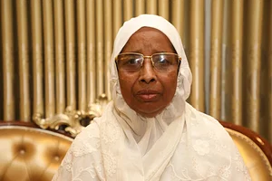
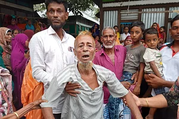

বিএনপিবিহীন ভোটেও হার, চিন্তিত আ.লীগ
ভোটের মাঠে দলীয় অনৈক্য আবারও স্পষ্ট হয়েছে। জাতীয় নির্বাচনের আগে দলের অনৈক্য ও বিরোধী ভোটের জোর ভাবাচ্ছে আওয়ামী লীগকে।সব ধরনের চেষ্টা করেও গাজীপুর সিটি করপোরেশন নির্বাচনে দলীয় প্রার্থীকে জেতাতে পারেনি । বিএনপিবিহীন ওই ভোটে দলীয় প্রার্থীর পরাজয়ে ক্ষমতাসীন দলের নেতারা কিছুটা হতাশ ও চিন্তিত। তাঁরা দলের অনৈক্য ও বিরোধীদের ভোটকে এই পরাজয়ের মূল কারণ হিসেবে দেখছেন।
Jayeda Khatun new mayor
একসঙ্গে দুই সন্তান হারিয়ে শোকে স্তব্ধ মা–বাবা
কুমিল্লার দাউদকান্দি উপজেলায় যাত্রীবাহী বাস ও সিএনজিচালিত অটোরিকশার মুখোমুখি সংঘর্ষে আল আমিন ফরাজী (৩৫) ও তাঁর বোন সালেহা বেগমের (৪৫) মৃত্যুর শোকে স্তব্ধ হয়ে আছে তাঁদের গ্রামের বাড়ি। ছেলে-মেয়েকে হারানোর আকস্মিকতায় বাকরুদ্ধ হয়ে গেছেন সিরাজুল ইসলাম ফরাজী ও তাঁর স্ত্রী আফিয়া বেগম।

প্রশ্নটা তুলেছে ব্রাজিলের সংবাদমাধ্যম ‘গ্লোবো’।
তবে চাইলে এই প্রশ্ন তুলতে পারেন সবাই।
ভিনিসিয়ুসের বর্ণবাদের শিকার হওয়ার পাঁচ দিন পার হয়ে গেল। বলতে গেলে গোটা ফুটবল-বিশ্বই সোচ্চার হয়ে পাশে দাঁড়িয়েছে ব্রাজিল তারকার। সামাজিক যোগাযোগমাধ্যমে বর্ণবাদের বিরুদ্ধে একের পর এক পোস্ট করছেন সাবেক ও বর্তমান ফুটবলাররা।
শুধু ফুটবল নয়, লুইস হ্যামিল্টনের মতো অন্য খেলার তারকারাও ভিনির পাশে দাঁড়িয়েছেন। ফিফা সভাপতি প্রতিবাদ করেছেন, জাতিসংঘের মানবাধিকারবিষয়ক হাইকমিশনারও বর্ণবাদের বিরুদ্ধে অবস্থান নিয়েছেন।
Box3 Content
Box4 Content